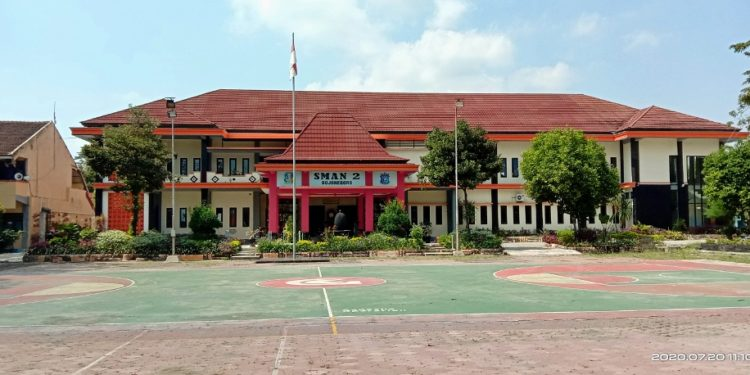

Menjadikan manusia yang bertaqwa, cerdas dan trampil, berakhlak mulia, berwawasan global, tanggap sosial dan lingkungan, serta memiliki rasa kebangsaan yang tinggi.
1. Meningkatkan pembelajaran yang efektif dan efisien.
2. Meningkatkan kompetensi tenaga pendidik dan kependidikan sesuai dengan tuntutan kurikulum sekolah.
3. Mengembangkan Proses Belajar mengajar dengan berbagai strategi pembelajaran yang relevan dan inovatif.
4. Meningkatkan kompetensi berbahasa Inggris dan bahasa asing lainnya bagi Tenaga Pendidik dan Kependidikan serta siswa.
5. Meningkatkan pelaksanaan kegiatan extra kurikuler sesuai dengan potensi, minat dan bakat siswa.
6. Melengkapi fasilitas pendidikan (prasarana, sarana, peralatan, media pembelajaran, dan fasilitas lain ) yang berkaitan dengan kegiatan PBM di sekolah.
7. Melaksanakan pembimbingan secara adil sehingga setiap siswa berkembang secara optimal sesuai dengan potensi yang dimiliki.
8. Memberikan motivasi untuk selalu berwawasan global sehingga siswa dapat mempersiapkan diri dengan persaingan yang mendunia.
9. Melaksanakan pendidikan budaya dan karakter bangsa melalui pengintegrasian pada setiap mata pelajaran.
10. Meningkatkan komitmen seluruh tenaga kependidikan terhadap tugas pokok dan fungsinya.
SMAN 2 BOJONEGORO adalah salah satu sekolah Negeri yang berlokasi di jalan HOS Cokroaminoto no 9, yang mulai beroperasi pada tahun 1977. Mulai berkembangnya dunia pendidikan di Indonesia, berpengaruh pula pada sistem pendidikan di Bojonegoro. Pada awalnya, satu satunya sekolah negeri di Bojonegoro adalah sekolah dengan nama SMAN BOJONEGORO, yang pada tahun 1963 hingga 1974 dipimpin oleh Bapak Soedirman. SMAN BOJONEGORO saat itu berada di Jl. Panglima Sudiman (untuk sekarang SMAN 1 BOJONEGORO). Sebelum tahun 1974, tepatnya tahun 1973 pemerintah membuat kebijakan lewat Menteri Pendidikan dan Kebudayaan yang berisi agar semua lulusan SMA dibekali barbagai macam keterampilan untuk persiapan memasuki dunia kerja. Dan akhirnya dengan berbagai petimbangan yang matang pemerintah mengubah nama SMAN dengan nama lembaga pendidikan yaitu Sekolah Menengah Pembangunan Persiapan atau SMPP. Dan akhirnya SMAN Bojonegoro (SMAN 1 sekarang ) resmi diubah menjadi SMPP. Berhubungan dengan adanya kebijakan pemerintah tahun 1973, maka di Bojonegoro mulai di bangunlah sekolah yang berada di JL. Dander ( untuk sekarang JL.HOS Cokroaminoto no 9) dengan nama SMPP (sekarang SMAN 2 Bojonegoro ) yang beroperasi mulai tahun 1977. Sehingga pada saat itu terdapat 2 SMPP, SMPP Utara dan SMPP Selatan. Tahun 1985, Pemerintah mengeluarkan kembali kebijakan untuk dunia pendidikan di seluruh indonesia yang menginstruksikan bahwa SMPP yang berada di seluruh Indonesia harus diubah menjadi SMAN. Dan berdasarkan surat keputusan Menteri Pendidikan dan Kebudayaan Republik Indonesia no 0353/0/1985 tentang Perubahan nama Sekolah Menengah Pembangunan Persiapan (SMPP) menjadi Sekolah Menengah Umum Tingkat atas (SMA). Berdasarkan kebijakan pemerintah yang di tanda tangani oleh Menteri Pendidikan dan Kebudayaan pada tanggal 9 Agustus 1985, maka resmilah SMPP Utara berganti nama menjadi SMAN 1 BOJONEGORO. Sedangkan SMPP Selatan berganti nama menjadi SMAN 2 BOJONEGORO yang berdiri hingga sekarang. SMA Negeri 2 Bojonegoro Berdiri sejak tahun 1963. Pimpinan sekolah dapat diurutkan sebagai berikut :
1. Periode 1963 - 1974 Soedirman
2. Periode 1975 - 1981 Drs. Chumedi
3. Periode 1981 - 1990 Maktoeri Siswoharsono
4. Periode 1990 - 1994 Soekisno
5. Periode 1994 - 1997 Drs. Henri J. Sarwidi
6. Periode 1997 - 2003 Drs. Tri Udi Prayitno M.Pd
7. Periode 2003 - 2010 Drs. Nurali M.Pd
8. Periode 2010 - 2012 Drs. H. Abdul Djamil M.Pd
9. Periode 2012 - 2015 Drs. Sigit Harsono M.Pd
10. Periode 2015 - Sekarang Drs. H. Mashadi M.Pd
a. Juara Umum Olimpiade Sains (IMO, IPHO, IBO, ICHO, Informatika dan Astronomi)
b. Juara 1 Karya Ilmiah Remaja Tingkat Provinsi
c. Juara III Karya Ilmiah Remaja Tingkat Nasional
d. Juara I Siswa Teladan/Berprestasi Tingkat Provinsi Jawa Timur